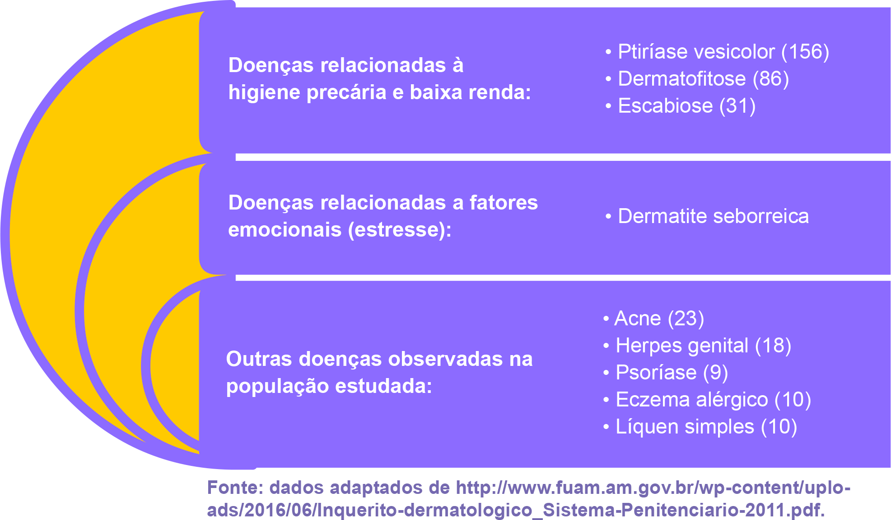

Clique na imagem para visualizar os dados do relatório.
Para iniciarmos a nossa discussão sobre doenças dermatológicas, resgatamos dados de um relatório publicado em 2011, feito por uma parceria entre o Departamento de Atenção Básica da Secretaria Municipal de Saúde de Manaus, o Departamento de Epidemiologia e Controle de Doença da Fundação Alfredo da Matta e a Unidade Prisional de Puraquequara.
O objetivo do estudo era realizar um inquérito dermatológico com o intuito de identificar os casos de hanseníase na referida unidade prisional. Sem que fosse intenção dos autores, os dados revelaram as seguintes informações: